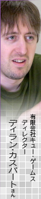
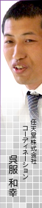

N.O.M
タッチペンを使った操作については？
呉服
これは相当モメました。もちろんゲームの最初に練習できるんですが、タッチで移動するにも関わらず、下画面のどこをさわれば、どう動くのかが、すぐにはつかめない（笑）。さわっている位置と、実際の動きで判断するんですが、慣れるまでのハードルが高いと感じて、かなり議論をしました。
ディラン
池端さんから「戦車ならではの重量を感じられるような操作にならないか」と提案されたんです。確かに操作をあえて少し不自由で凝った感じにしたほうが深く楽しめるかなと思い、調整しました。
N.O.M
すぐ横に敵がいるのに、前に進んでいるのでうまく向きを変えられないとかですね。
ディラン
すべてのゲームで操作感を統一するんじゃなくて、そのゲームに合わせた操作感を持たせたほうがいいと思うんです。私が元々オーソドックスな操作方法はあまり好きじゃないというのもありましたし（笑）。
呉服
結果、初めは慣れなくても遊んでいくうちに、好きなようにVIXIVを動かすことができるようになってくることもわかってきたんです。そうなると、それも含めての『X-RETURNS』なのかなと思うようになりました。
池端
移動をタッチペンで行う分、ボタンがあいてるんですよね。ですので、ボタンを押すと、すべてショットを発射する操作になっています。そのおかげで、十字ボタンをクルクル回すように押すとショットの連射がしやすいですよ（笑）。
N.O.M
そんな技があるんですね（笑）！
池端
さらに1回押すと弾が3発出るようになっているので、連射が苦手でも大丈夫です。でも、どうしても片手で持っていて落ち着かないという方のために、ボタンモードもお願いして入れてもらいました。こちらのほうはゲームボーイの頃と近い操作感でプレイしてもらえますね。
ディラン
どちらも違う感じでそれぞれ楽しめる部分があるので、両方やってもらいたいです（笑）。
前田
ボタンモードだと旋回と移動を個別でやるような感じで、まず旋回して探索し、目的地を見つけたら進むという丁寧な動作をしやすいです。
呉服
プレイヤーごとに好みの操作を見つけてもらえれば一番いいかなと思います。チュートリアルはタイトル画面から何度でもできますので、慣れないうちはどちらがベストなのか試していただければ。